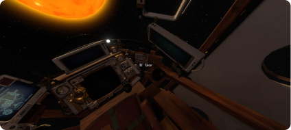
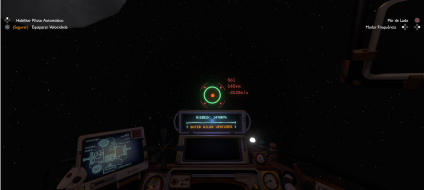
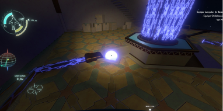
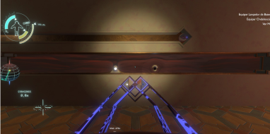
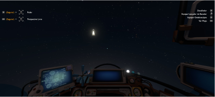
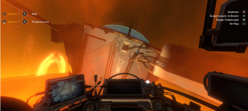

Outer Wilds - Guia de Conquistas
Bem vindo ao guia totalmente em Português de como conseguir 100% das
conquistas no Outer Wilds!
Caso você esteja aqui procurando platinar esse jogo espetacular, eu espero que você já tenha terminado o jogo pelo menos uma vez! Pois esse guia contém MUITOS SPOILERS!
Separei as conquistas do jogo base das conquistas da DLC, pra caso você não tenha jogado a DLC ainda e apenas queira ver as principais sem nenhum spoiler da expansão. Mas já te adianto que o 100% só é possível caso você possua a DLC (Echoes of the Eye).
Enfim, boa sorte na sua jornada para atingir os 100%!
Caso você esteja aqui procurando platinar esse jogo espetacular, eu espero que você já tenha terminado o jogo pelo menos uma vez! Pois esse guia contém MUITOS SPOILERS!
Separei as conquistas do jogo base das conquistas da DLC, pra caso você não tenha jogado a DLC ainda e apenas queira ver as principais sem nenhum spoiler da expansão. Mas já te adianto que o 100% só é possível caso você possua a DLC (Echoes of the Eye).
Enfim, boa sorte na sua jornada para atingir os 100%!
Morra em 60 segundos após acordar.
Simplesmente isso. Acorde, pule na fogueira do seu lado e morra :(
Simplesmente isso. Acorde, pule na fogueira do seu lado e morra :(
Use seu traje de oxigênio de forma inapropriada.
Gaste todo seu combustível da sua roupa de astronauta e utilize o oxigênio de propulsor.
Gaste todo seu combustível da sua roupa de astronauta e utilize o oxigênio de propulsor.
Coma 10 marshmallows queimados.
É isso ai... Coitado do seu personagem que vai ter que comer tudo isso queimado :(
É isso ai... Coitado do seu personagem que vai ter que comer tudo isso queimado :(
Ao lado do painel principal da sua nave (aquela que você vê enquanto
está sentado) existe um botão vermelho de ejetar. Apenas suba a capa
de proteção e aperte o botão!

Pegue todos os instrumentos dos viajantes simultaneamente com seu
onduloscópio.
O jeito mais facil de conseguir essa conquista é ir beeeeeeem longe do sistema solar e utilizar seu onduloscópio para captar todos os instrumentos de uma vez só.

O jeito mais facil de conseguir essa conquista é ir beeeeeeem longe do sistema solar e utilizar seu onduloscópio para captar todos os instrumentos de uma vez só.
Lance sua nave com um canhão gravitacional.
É só lançar a sua nave em um dos canhões e ver seu meio de transporte ir embora... Existem canhões gravitacionais no Gêmeo Cálido e no Vale Incerto.
Ah, e certifique-se que o canhão esteja desligado antes de posicionar a sua nave nela, e só depois de deixar sua nave parada lá, acione o canhão gravitacional. (Para acionar o canhão gravitacional, é só puxar a bolinha pro lado ESQUERDO)
É só lançar a sua nave em um dos canhões e ver seu meio de transporte ir embora... Existem canhões gravitacionais no Gêmeo Cálido e no Vale Incerto.
Ah, e certifique-se que o canhão esteja desligado antes de posicionar a sua nave nela, e só depois de deixar sua nave parada lá, acione o canhão gravitacional. (Para acionar o canhão gravitacional, é só puxar a bolinha pro lado ESQUERDO)
Destrua o Foguete Modelo ao voar para o sol ou ao Luzeiro do Vale.
Se você achou a conquista passada difícil, essa aqui vai ser um POUCO pior... Você vai precisar aterrissar o mesmo foguetinho (o de teste, que fica no começo do jogo) no Sol ou no Luzeiro do Vale (aquela lua que fica cuspindo meteoro no Vale Incerto). Recomendo você tentar pousar no sol, e utilizar a mesma técnica da conquista passada, que é esperar o sol ficar acima do Recanto Lenhoso e ativar os propulsores pra ir "reto" em direção ao sol. Quando você perder o sinal, provavelmente você conseguiu e a conquista vai aparecer.
Se você achou a conquista passada difícil, essa aqui vai ser um POUCO pior... Você vai precisar aterrissar o mesmo foguetinho (o de teste, que fica no começo do jogo) no Sol ou no Luzeiro do Vale (aquela lua que fica cuspindo meteoro no Vale Incerto). Recomendo você tentar pousar no sol, e utilizar a mesma técnica da conquista passada, que é esperar o sol ficar acima do Recanto Lenhoso e ativar os propulsores pra ir "reto" em direção ao sol. Quando você perder o sinal, provavelmente você conseguiu e a conquista vai aparecer.
Aterrisse o foguete modelo na Pedra de Lia.
Uma conquista um pouco mais difícil do que o normal. Você vai precisar pousar aquele foguetinho de teste que você pode usar beeeem no comecinho do jogo (logo depois de acordar e sair em direção a vila) na lua. Uma dica é esperar a lua se alinhar bem em cima do Recanto Lenhoso e simplesmente usar os propulsores em linha reta (ajustando se precisar) até chegar na lua. Com prática você consegue!
Uma conquista um pouco mais difícil do que o normal. Você vai precisar pousar aquele foguetinho de teste que você pode usar beeeem no comecinho do jogo (logo depois de acordar e sair em direção a vila) na lua. Uma dica é esperar a lua se alinhar bem em cima do Recanto Lenhoso e simplesmente usar os propulsores em linha reta (ajustando se precisar) até chegar na lua. Com prática você consegue!
Não há volta.
Você precisa destruir o espaço tempo para ganhar essa conquista.
O jeito mais simples é o seguinte: vá para o Laboratório de Alta Energia e transfira a energia da Cidade do Ocaso para o Laboratório (apenas puxe a bolinha que fica no chão para o outro lado da sala, ficando na frente da janela do local de experimento).

Você precisa destruir o espaço tempo para ganhar essa conquista.
O jeito mais simples é o seguinte: vá para o Laboratório de Alta Energia e transfira a energia da Cidade do Ocaso para o Laboratório (apenas puxe a bolinha que fica no chão para o outro lado da sala, ficando na frente da janela do local de experimento).
Após isso, abra a janela do local de experimento (você abre
puxando uma outra bolinha que fica na parede) , depois pegue um
quadradinho de buraco preto e um de buraco branco (que ficam
localizados na parede da sala) e coloque nos dois soquetes que
ficam embaixo da janela.
Feito isso, lance seu batedorzinho no buraco preto, MAS quando ele estiver saindo no buraco branco, tire o quadradinho do buraco preto do soquete, fazendo com que exista 2 batedorzinho e assim quebrando o espaço tempo.

Feito isso, lance seu batedorzinho no buraco preto, MAS quando ele estiver saindo no buraco branco, tire o quadradinho do buraco preto do soquete, fazendo com que exista 2 batedorzinho e assim quebrando o espaço tempo.
Tentou fugir do sistema solar.
Essa conquista é bem confusa para desbloquear, mas basicamente você precisa estar MUITO longe do sistema solar quando o loop acabar. Alguns dizem que você não pode dormir para que o tempo passe mais rápido, outros dizem que você tem que estar mais de 25000km de distância do sistema solar e etc. Eu consegui da seguinte forma: Logo que acordei, eu fui pra nave, coloquei o traje e sai voando do planeta, depois disso mirei no sol e fui na direção contrária dele atééééééééé acabar o loop, sempre com os propulsores ativados, se afastando do sistema solar.
Essa conquista é bem confusa para desbloquear, mas basicamente você precisa estar MUITO longe do sistema solar quando o loop acabar. Alguns dizem que você não pode dormir para que o tempo passe mais rápido, outros dizem que você tem que estar mais de 25000km de distância do sistema solar e etc. Eu consegui da seguinte forma: Logo que acordei, eu fui pra nave, coloquei o traje e sai voando do planeta, depois disso mirei no sol e fui na direção contrária dele atééééééééé acabar o loop, sempre com os propulsores ativados, se afastando do sistema solar.
Termine um loop temporal (com vida) após receber (e se curado) de 1000
danos
Uma conquista bem tranquila de se fazer. Vá para algum lugar com sua nave que tenha uma fogueira por perto, depois é só ficar se queimando até quase morrer e entrando na sua nave para se curar (só clicar nas ferramentas ao lado da onde vc pegou seu uniforme), faça isso umas 15 vezes para garantir e depois espere o sol explodir naturalmente (tem que esperar o loop terminar).
Uma conquista bem tranquila de se fazer. Vá para algum lugar com sua nave que tenha uma fogueira por perto, depois é só ficar se queimando até quase morrer e entrando na sua nave para se curar (só clicar nas ferramentas ao lado da onde vc pegou seu uniforme), faça isso umas 15 vezes para garantir e depois espere o sol explodir naturalmente (tem que esperar o loop terminar).
Adentre o oceano de Profundezas do Gigante rápido o bastante para
atravessar a corrente.
Para atravessar a corrente que tem na Profundezas do Gigante, você vai precisar entrar no planeta com uma velocidade de aproximadamente 12000 m/s. Para isso, marque a Profundezas do Gigante com a sua nave e se afaste mais ou menos 400 km de distância do planeta, depois disso é só pisar fundo no acelerador e tentar alcançar a velocidade necessária para atravessar a corrente (boa sorte para não atingir uma das ilhas na hora do impacto, hehe).
Para atravessar a corrente que tem na Profundezas do Gigante, você vai precisar entrar no planeta com uma velocidade de aproximadamente 12000 m/s. Para isso, marque a Profundezas do Gigante com a sua nave e se afaste mais ou menos 400 km de distância do planeta, depois disso é só pisar fundo no acelerador e tentar alcançar a velocidade necessária para atravessar a corrente (boa sorte para não atingir uma das ilhas na hora do impacto, hehe).
Tire o satélite dos lenhosos de órbita.
Existe um satélite que fica tirando fotos, orbitando o Recanto Lenhoso (é um pontinho branco que passa bem perto do planeta). Apenas pegue tua nave (ou teu corpo) e bata no satélite.

Existe um satélite que fica tirando fotos, orbitando o Recanto Lenhoso (é um pontinho branco que passa bem perto do planeta). Apenas pegue tua nave (ou teu corpo) e bata no satélite.
Voe manualmente até a Estação Solar.
É... Provavelmente essa conquista vai te dar um pouquinho de dor de cabeça. Para você conseguir chegar na Estação Solar sem utilizar as plataformas de translocação, você vai precisar ir voando manualmente até ela. Uma dica para que você consiga é a seguinte: Tente ficar em órbita do sol e ir fazendo leves ajustes até chegar na Estação Solar. Vai ser difícil, eu tentei muuuitas vezes, mas uma hora você pega o jeito! (assistir uns vídeos de como a galera fez essa conquista também ajuda!)
OBS: Tente parar a nave naquele "corredor" que liga a entrada e a estação solar de fato. E para sair da nave, eu recomendo dar um impulso pra cima com a nave e depois sair direto na escotilha, para que a gravidade do sol não te puxe tanto.

É... Provavelmente essa conquista vai te dar um pouquinho de dor de cabeça. Para você conseguir chegar na Estação Solar sem utilizar as plataformas de translocação, você vai precisar ir voando manualmente até ela. Uma dica para que você consiga é a seguinte: Tente ficar em órbita do sol e ir fazendo leves ajustes até chegar na Estação Solar. Vai ser difícil, eu tentei muuuitas vezes, mas uma hora você pega o jeito! (assistir uns vídeos de como a galera fez essa conquista também ajuda!)
OBS: Tente parar a nave naquele "corredor" que liga a entrada e a estação solar de fato. E para sair da nave, eu recomendo dar um impulso pra cima com a nave e depois sair direto na escotilha, para que a gravidade do sol não te puxe tanto.
Traga um artefato de volta para o museu.
Vá para o Laboratório de Alta Energia e pegue um daqueles quadradinhos de buraco branco ou preto e traga de volta para o museu no Recanto Lenhoso.
Vá para o Laboratório de Alta Energia e pegue um daqueles quadradinhos de buraco branco ou preto e traga de volta para o museu no Recanto Lenhoso.
Crie um novo save e utilize seus conhecimentos para zerar o jogo no
primeiro loop!
(Recomendo você pegar o sinal das capsulas de escape antes de entrar no Abrolho Sombrio, caso você não saiba ir de cor para o Hospedeiro).
(Recomendo você pegar o sinal das capsulas de escape antes de entrar no Abrolho Sombrio, caso você não saiba ir de cor para o Hospedeiro).
Conclua o diário de bordo da nave.
Talvez a conquista mais demorada do jogo. Você vai precisar completar todas as entradas que tem no seu diário de bordo (mesmo que não tenha aquele simbolo de "há mais para explorar aqui"). É uma conquista longa, e para isso recomendo esse outro guia especialmente feito para essa conquista!
Talvez a conquista mais demorada do jogo. Você vai precisar completar todas as entradas que tem no seu diário de bordo (mesmo que não tenha aquele simbolo de "há mais para explorar aqui"). É uma conquista longa, e para isso recomendo esse outro guia especialmente feito para essa conquista!